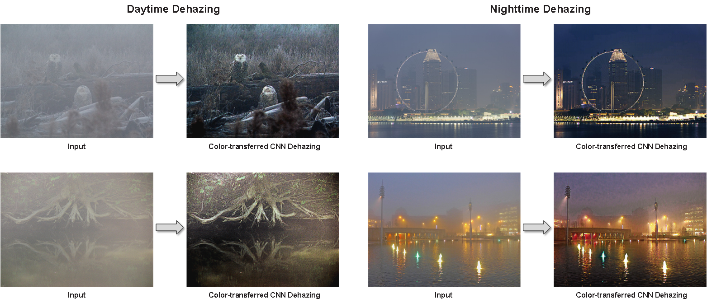

Image dehazing is a crucial image processing step for outdoor vision systems. However, images recovered through conventional image dehazing methods that use either haze-relevant priors or heuristic cues to estimate transmission maps may not lead to sufficiently accurate haze removal from single images. The most commonly observed effects are darkened and brightened artifacts on some areas of the recovered images, which cause considerable loss of fidelity, brightness, and sharpness. This study develops a variational image dehazing method on the basis of a color-transfer image dehazing model that is superior to conventional image dehazing methods. By creating a color-transfer image dehazing model to remove haze obscuration and acquire information regarding the coefficients of the model by using the devised convolutional neural network based deep framework as a supervised learning strategy, an image’s fidelity, brightness, and sharpness can be effectively restored. Experimental results verify through quantitative and qualitative evaluations of either synthesized or real haze images that the proposed method outperforms existing single image dehazing methods.

Implementation in Python: [GitHub]
J. L. Yin, Y. C. Huang, B. H. Chen and S. Z. Ye, "Color Transferred Convolutional Neural Networks for Image Dehazing," IEEE Transactions on Circuits and Systems for Video Technology. (in press) [pdf][bib]